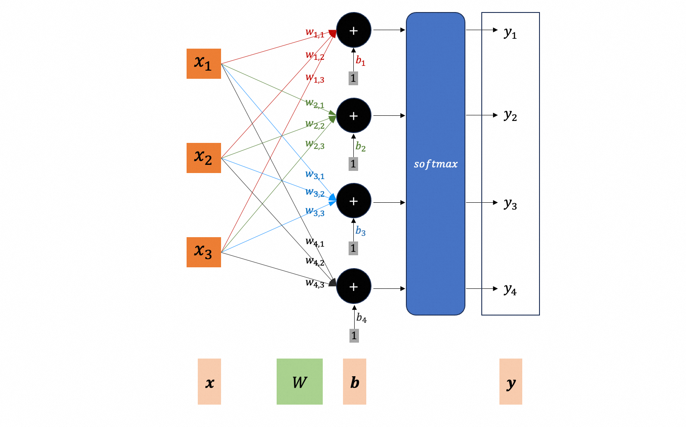
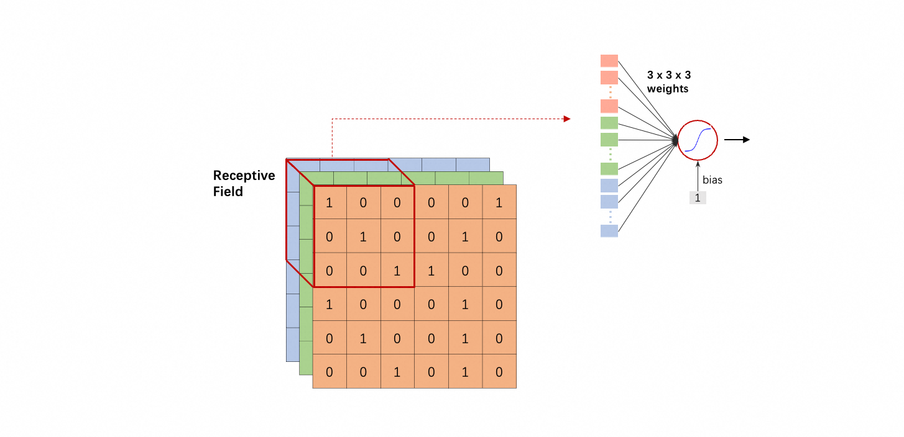
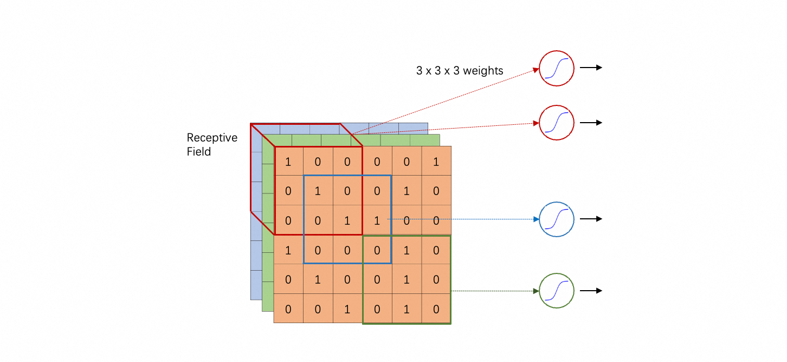
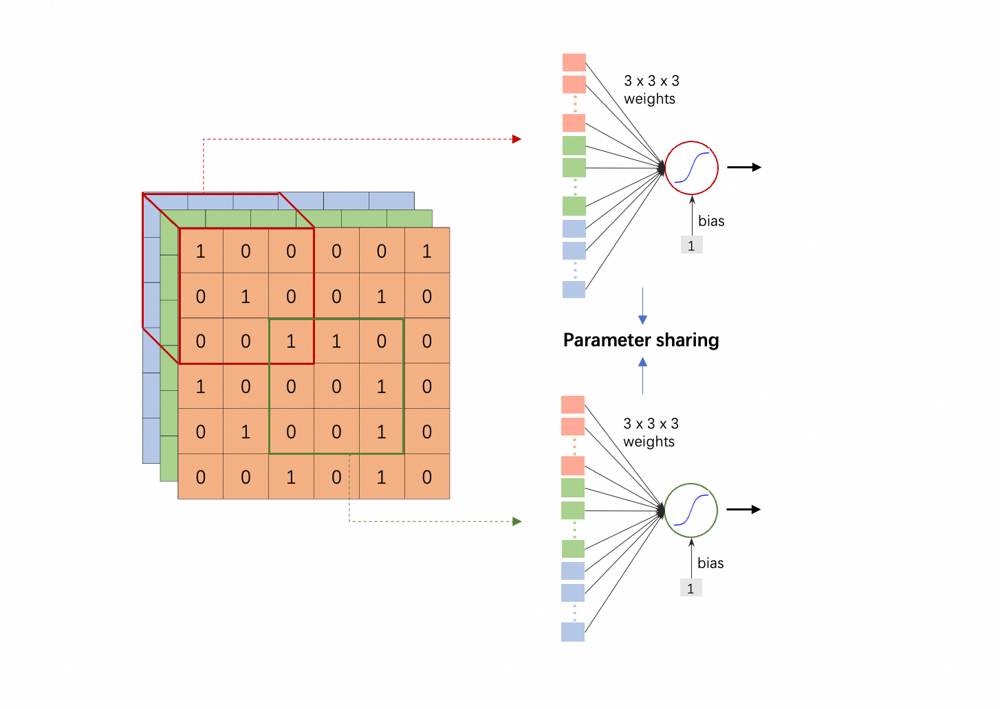
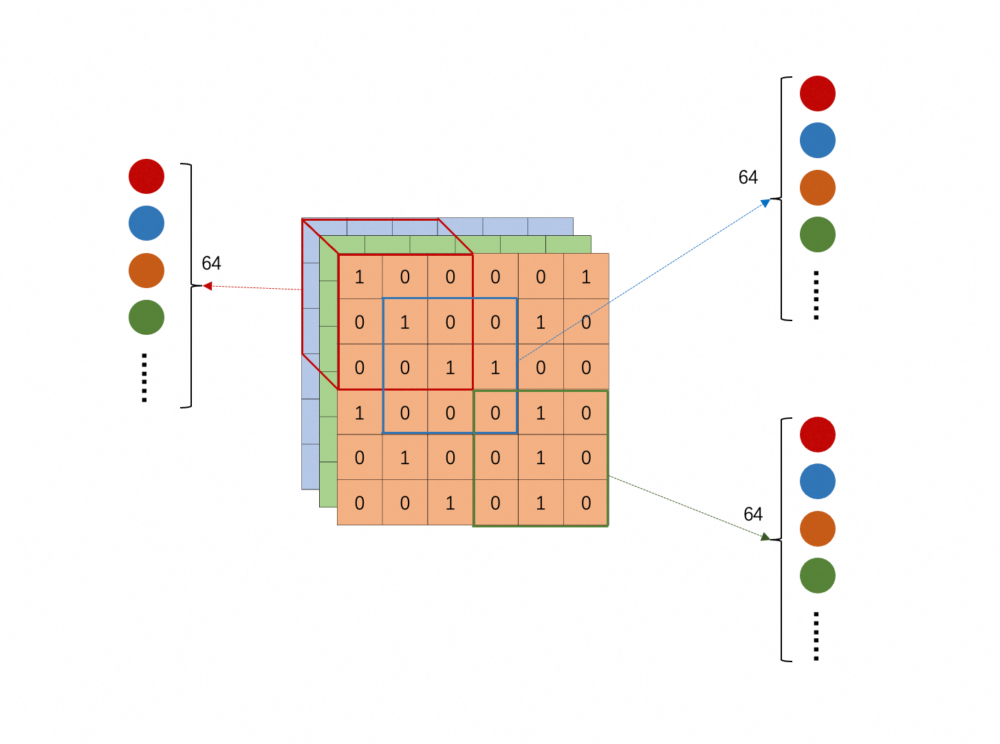
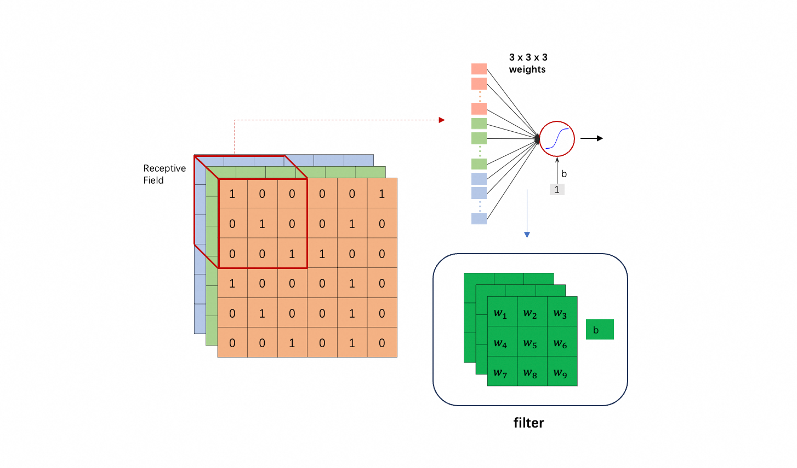
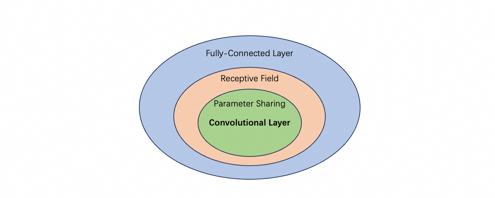
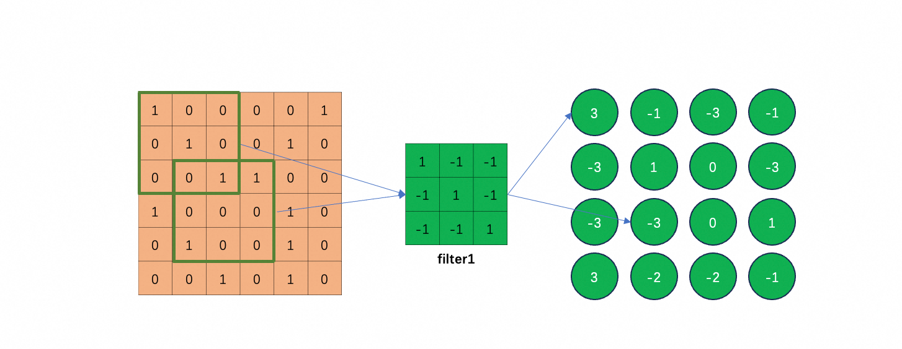
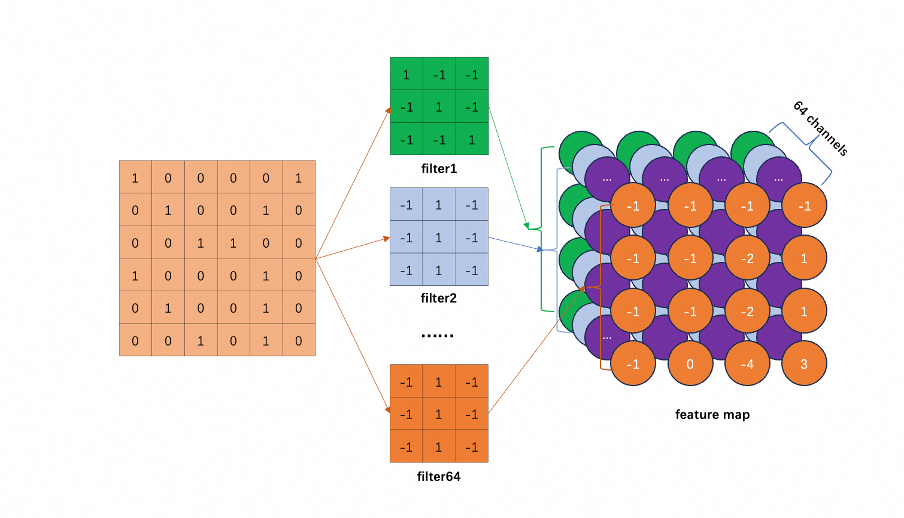
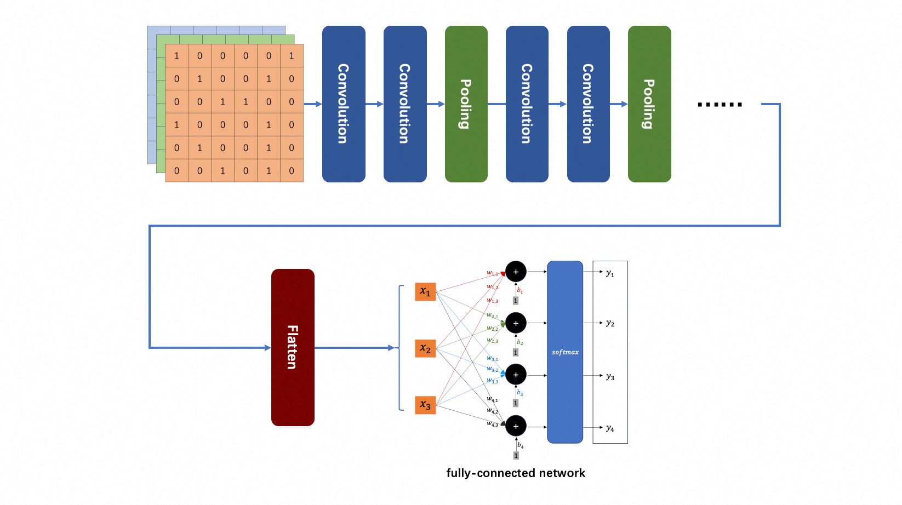

卷积神经网络（Convolutional Neural Network）基础。
问题设定 (1)
训练数据为一组带标签的样本。
- 对象：在图像识别中，通常是固定大小的图像，例如 $100 \times 100 \times 3$ 的 RGB 图像。其中 3 表示颜色通道（channel）数；灰度图像的 channel 数为1；
- 标签：通常用 one-hot 向量表示类别，维度等于类别总数；
- 样本：图片及其标签；
任务：训练一个图像识别神经网络。
最初想法 (2)
在分类问题中，已经构建了这样一个神经网络（可能多个隐藏层，图中未画出）：

直接把图片代入 $\boldsymbol{x}$ 不就可以了吗？也就是把 $100 \times 100 \times 3$ 的图片看成 30000 维的向量，送入神经网络，通过梯度下降最小化交叉熵，……
这是一个 fully connected network，它是一个通用的模型，但对于图像识别有一些问题：
- 首先，参数比较多，例如第一层有 1000 个 neuron，就会有 $100 \times 100 \times 3 \times 1000 = 3 \times 10^7$ 个权重参数。
- 其次，模型弹性很大，增加 overfitting 的风险。
- 另外，这种做法将图像展平为向量，完全忽略了像素之间的空间局部性（如相邻像素相关性强），而这种局部结构对图像识别至关重要。
针对图像识别的优化 (3)
Receptive Field (3.1)
人类对于图像的识别，是基于一些关键特征（critical patterns）的，例如根据眼睛、鼻子、嘴巴、耳朵等特征判断图像是一只猫。机器也是这样。
既然一个 critical pattern 只是图片的一小部分，就没有必要让每个 neuron 都“观察”整张图片。相反，每个 neuron “观察”一个很小的范围就可以了。也就是说，每个 neuron 的输入是图片的一部分，而不是整张图片。这就是第一个优化。

图片的一个部分叫做一个 receptive field；而一个 neuron 只“观察”一个 receptive field。
关于 receptive field 的选择，有很大的灵活性：
- 彼此可以重叠（overlap）；
- 多个 neuron 可以“观察”同一个 receptive field;
- 大小可以自己选择：可以不是正方形，多个 receptive field 的大小可以不同；
- 可以只包含部分 channel；
- 甚至可以不连续（例如包含左上角的一些像素和右下角的一些像素）；

但典型设置是：
- receptive field 通常包含所有channel；
- 大小通常是 $3 \times 3$，叫做 kernel size（注意 kernel size 不包含 channel 数，即不是 $3 \times 3 \times 3$）。问题：critical pattern 的大小超过 $3 \times 3$，会导致识别不到吗？不会，后文会解释；
- 同一个 receptive field 会有一组 neuron 去“观察”，例如 64 个或 128 个；
- receptive field 高度重叠：把一个 receptive field 往右或者往下移动一个距离，就得到一个新的 receptive field；移动的距离叫 stride（hyper-parameter）；stride 一般不会设置太大，通常1或2（否则可能跳过了 critical pattern）；若 stride 大于 1，移到边缘可能需要 padding；
- 按上述方式，扫过图片所有区域；
Parameter Sharing (3.2)
同样的 pattern 可能出现在图片的不同位置：例如猫的眼睛，可能出现在图片左上角，也可能出现在右下角……
这也不是问题，因为每个 receptive field 都有 neuron 去“观察”。然而，左上角识别眼睛的 neuron 和右下角识别眼睛的 neuron 做的事情是一样的，何不让它们共享参数 (sharing parameter)？就是那两个 neuron 的 weights 和 bias 是一样的。这就是第二个优化。

注意：
- 共享参数的那两个 neuron 参数是一模一样的，每个 $w_i$ （$i=1, 2, \dots, 27$）和 $b$ 都对应相等。
- 但它们的输出不一样，因为输入不一样（“观察”不同的 receptive field）。
- 这也告诉我们，“观察”同一个 receptive field 的 neuron 不能共享参数（否则输出一定一样）。
参数共享的方式也有很大灵活性，但典型设置是：
- “观察”每个 receptive field 的 neuron 数量相同，例如 64 个或 128 个；
- “观察”不同 receptive field 的 neuron 组，一一对应共享参数，如下图所示（相同颜色的 neuron 彼此共享参数）；

图片有多少个 receptive field 就有多少个 neuron 共享同一组参数（包括权重和偏置）。这一组参数叫做一个 filter。另一方面，filter 的个数和“观察”一个 receptive field 的 neuron 个数相等，例如 64 个或 128 个。

后文还会从 filter 的视角重新解释神经网络。
卷积神经网络 (3.3)
在 fully connected network 中，每个 neuron 的输入都是整张图片，故弹性最大。容易证明，只要每个 neuron “观察”一部分，把其它权重都设置为0，就退化成 带优化1的版本（只“观察” receptive field）。所以，前者是后者的超集，后者的弹性小于前者。
在 receptive field 的基础上，进一步限制弹性：学习的时候，要保持参数共享的约束，不能随意调整。
Receptive field 与 parameter sharing 合起来，就构成 convolutional layer；包含 convolutional layer 的网络，就是 convolutional neural network（CNN, 卷积神经网络）。

从上图可知，CNN 的 model bias 比较大；但这些 model bias 都是基于对图像识别任务的理解人为引入的，是为图像识别定制的。可以这么理解，fully connected network 弹性最大，是一个全能的网络，但它在具体一个特定领域通常不是最好的。
从 Filter 的角度看CNN (4)
本节是解释 CNN 的另一个版本。可以不看上面的版本，直接看这一节。不过，个人觉得上面的版本更偏向于训练角度；本节的版本更偏向于推理。
卷积神经网络包含一组 filter，就是被多个 neuron 共享的参数（见前文）；一个 filter 可以派生出多个 neuron （但不以 neuron 为第一视角；提 neuron 的主要目的是为了理解两个版本是等价的）。
一个 filter 以固定步长（stride）在输入图像上滑动，遍历所有局部区域，从每个区域提取 pattern。这一过程称为 “对输入图像进行卷积”（convolve over the input image），也是“卷积神经网络”名称的由来。（对应之前的版本：一个 filter 派生出多个 neuron，每个 neuron “观察”一个 receptive field）。
如何提取？从计算公式看，和 neuron 的计算一模一样。
filter 就是多个 neuron 共享的参数；以 $\text{KernelSize} = 3 \times 3$ 且图片有 3 个channel 为例，filter 就包含 27 个 weight 值（$w_i$，$i = 1, 2, \dots, 27$）和一个偏置 $b$；
抓取 pattern 就是 filter 和图片上的一个区域做内积：
$$
w_1 p_1 + w_2 p_2 + \dots + w_{27} p_{27} + b = \sum_{i=1}^{27} w_i p_i + b
$$
其中 $p_i$ 表示图片区域的像素数据，$i = 1, 2, \dots, 27$；从 neuron 的角度，就是计算输出的公式。
下面假设 channel 为 1，stride 为 1，且忽略 $b$，说明 filter 如何工作。

怎么理解“抓取” pattern呢？图中 filter1 的对角线都是 1，其它是 -1；所以它遇到对角线都是 1 的 pattern，输出就最大。图中，左上角和左下角就是这种 pattern。
对每个 filter 重复如上操作：

假如有 64 个 filter （观察每个 receptive field 的 neuron 是 64 个），就会产生 64 组数据。这其实又构成一张新的“图像”，叫做 feature map，它有 64 个 channel。
注意，前面假设原始图像的 channel 为 1，feature map 的每个像素点是 $\sum_{i=1}^9 w_i p_i$（忽略了 $b$）。即使原始图像的 channel 为 3，feature map 的 channel 还是 64 而不是 $64 \times 3 = 192$。每个 filter 还是产生一个channel，只是每个像素点是 $\sum_{i=1}^{27} w_i p_i$，（把目标区域 3 个 channel 的所有像素算到 feature map 的一个 channel 的一个点上）。总之，1 个 filter 产生 feature map 的一个 channel。
仔细观察上图，就可以回答第3节遗留的问题了：kernel size 设置为 $3 \times 3$，若 critical pattern 的范围超过此大小，会导致识别不到吗？不会，因为 feature map 中的 $3 \times 3$ 范围对应到原始图像中的 $5 \times 5$ 区域。后文 multiple convolutional layers 叠加，进一步放大这个效果。
两个版本的 story 是完全等价的：
- Neuron Version Story:
- Each neuron only considers a receptive field.
- The neurons with different receptive fields share the parameters.
- Filter Version Story:
- There are a set of filters detecting small patterns.
- Each filter convolves over the input image.
完整的CNN (5)
既然原始图像经过一个 convolutional layer 输出的是另一个“图像”（64 channel 的 feature map），很容易想到把多个 convolutional layers 叠起来。显然，第 $L+1$ 层的 filter 的 channel 数，等于第 $L$ 层的 feature map 的 channel 数（例如64）。

通常几个 convolutional layer 之后还会接一个 pooling 层。Pooling 就是把比较大的 feature map 变小。一张真实的图像，把它的奇数列和奇数行像素都去掉，图像大变成原来的 $\frac{1}{4}$，基本上还保留原来的形状。对于 feature map 也类似，过程是这样的：以 $N \times N$ 为一个单元（例如 $2 \times 2$），取每个单元内的最大值，就得到一张原 feature map 的 $\frac{1}{4}$ 的小 map，这个过程是 max pooling。类似的，也可以取平均数（mean pooling），或者几何平均数等。
可以看出，pooling 层没有参数，相当于一个操作符。
另外，pooling 也不是必须的，甚至可能降低识别准确度。它的主要作用是减少运算量；现在算力越来越强，可以考虑省去 pooling 层。
CNN 的应用 (6)
Alpha Go 就是基于 CNN 设计的。下围棋可以看做是一个分类问题：总共有 $19 \times 19 = 361$ 个类别；输入棋盘的局面，输出下一步落子位置（361个类别中的一个）。
和图像识别有什么共同特性呢？
- some patterns are much smaller than the whole image;
- the same pattern appears in different regions;
注：pooling 不适用：舍弃一些像素（棋盘上的点），局面就会发生重大变化；
所以，下围棋就变成了图像识别：局面的类别，就是在此局面下，下一步落子的位置。
不过，不是真把棋盘局面这个 RGB 图片（3 个 channel）输入到 CNN。围棋的实际局面由一张 $19 \times 19$ 的黑白图片（channel 为 1）表示就够了（例如每个像素上，1表示已落白子，-1表示已落黑子，0表示未落子），但 Alpha Go 的输入图片有 48 channel，即棋盘上的每个点由 48 个数字表示，应该包含这个点周围的局面信息（可能由围棋专家设计）。其它细节：第一个隐藏层 kernel size 是 5；其它隐藏层 kernel size 是 3 等。
小结 (7)
卷积神经网络（CNN）是为图像等具有空间结构的数据量身设计的神经网络架构。它从全连接网络出发，通过引入两个关键的结构化约束，显著提升了模型在图像识别任务上的效率与泛化能力：
局部感受野（Local Receptive Field）：每个 neuron 只关注输入图像的一个局部区域，而非整张图。这符合图像的局部相关性假设——相邻像素往往共同构成有意义的模式（如边缘、纹理）。
参数共享（Parameter Sharing）：同一特征检测器（即 filter）在整个图像上滑动使用，使得模型对平移具有不变性（translation invariance），并大幅减少参数数量，降低过拟合风险。
这两个机制共同构成了卷积层：一组可学习的 filter 在输入上滑动，生成多通道的 feature map，每一层逐步提取从低级（边缘、角点）到高级（部件、物体）的语义特征。
因此，CNN 并非“能力更弱”的网络（对比fully connected network），而是将人类对图像结构的先验知识编码进模型架构的一种高效设计——用合理的 model bias 换取更强的专项能力。